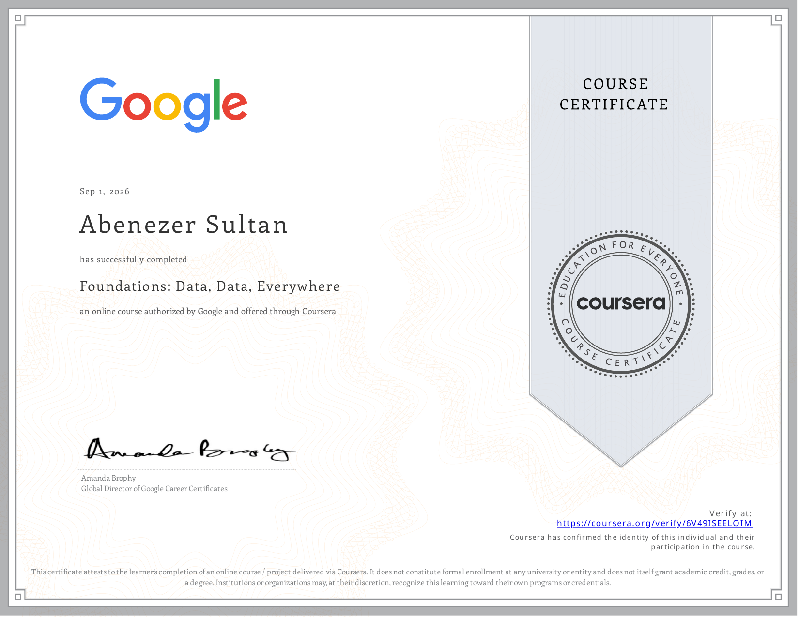
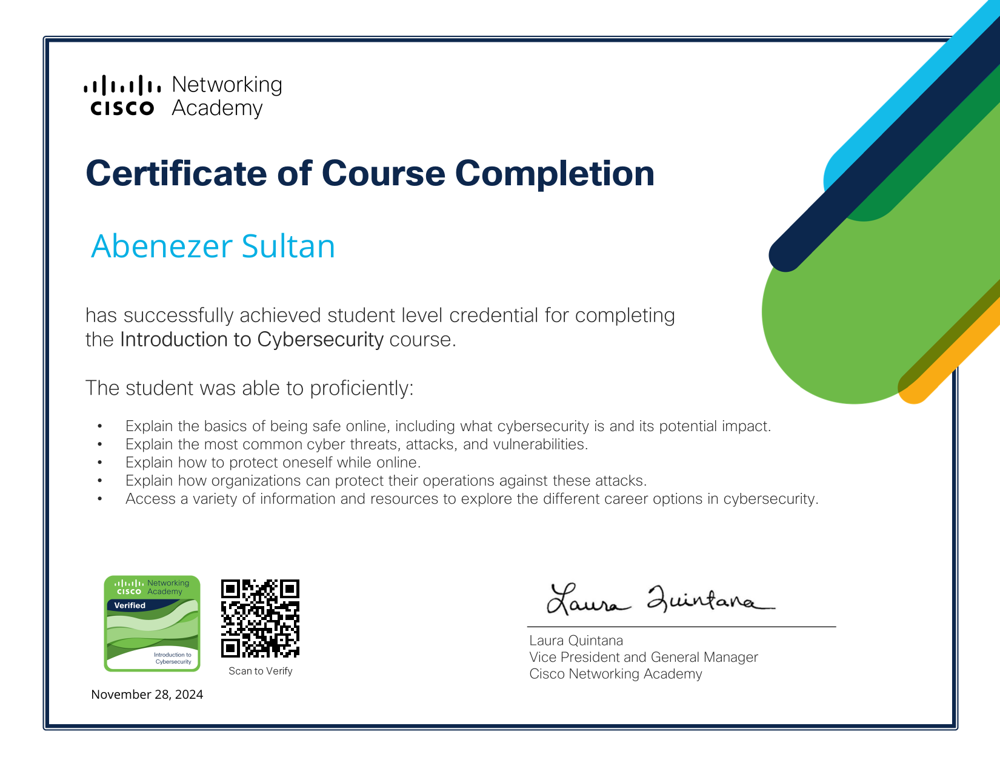

Scholarship
Zell Miller Academic Scholarship
Recipient, June 2021 – present
Awards & certifications
Academic standing, scholarship, and the Cisco intro path — listed as they appear on the resume.
Recipient, June 2021 – present
Fall 2021 and Fall 2025
October 2025 · Top 10 — phone-serial verification and AI-aware bank access framework.
Select a certificate to open the full PDF.
Completed through Coursera on September 1, 2026.
Open PDF
Student-level credential earned on November 28, 2024.
Open PDF